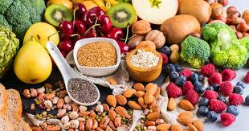
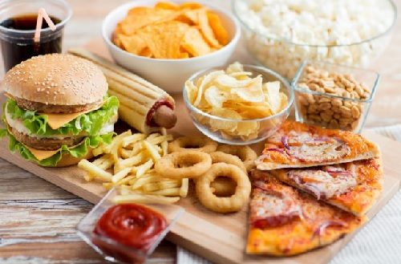

Comer de forma saludable no sólo depende del tipo de alimentos que se consuman, sino que los hábitos y costumbres que se sigan a la hora de alimentarse cumplen un papel importante para lograr mantener una buena salud. Es tan necesario conocer los alimentos que tienen beneficios como aquellos que son más perjudiciales o que están menos recomendados, de manera que se pueda establecer una dieta variada y equilibrada que no excluya nutrientes, vitaminas y minerales necesarios para que el organismo lleve a cabo sus funciones.
Alimentarse no se debe tomar únicamente como la acción de obtener la energía necesaria para el día a día, ya que la suma del consumo de productos saludables y buenos hábitos puede ayudar a conservar la salud y a prevenir enfermedades.
Aunque existan una serie de recomendaciones generales en cuanto a buenos hábitos alimentarios, entre los que se incluye el número de comidas recomendadas, la rutina diaria comprende responsabilidades y compromisos de todo tipo (profesionales, personales, etcétera) que en muchas ocasiones imposibilitan que se puedan seguir a rajatabla estas pautas, que dependen en gran medida de las obligaciones horarias del día a día.
Otros factores, como la cultura y los hábitos en el ámbito territorial o familiar, también pueden llegar a comprometer el seguimiento exhaustivo de todas las recomendaciones sobre prácticas saludables relacionadas con la alimentación. Sin embargo, aunque no se puedan cumplir de forma absoluta estas pautas, es importante intentar seguirlas en la medida de lo posible. Se pueden considerar buenas prácticas alimentarias las siguientes opciones:
Consumir frutas y verduras: Aunque esto tenga que ver más con establecer dos ejemplos de alimentos saludables, es importante convertir en un hábito el consumo de frutas y verduras, ya que contienen la mayoría de vitaminas y nutrientes esenciales para el correcto funcionamiento del organismo.
Llevar una dieta variada y equilibrada: No se debe excluir casi ningún alimento de una dieta saludable. Algunos alimentos son más sanos que otros, pero la clave está en priorizar e incrementar el consumo de productos saludables, mientras se reduce la ingesta de otros alimentos que, consumidos en exceso, pueden ser perjudiciales. La dieta mediterránea es un claro ejemplo de dieta variada y equilibrada.
Realizar cinco comidas al día: Los expertos recomiendan cinco, pero las diferentes responsabilidades personales y profesionales pueden dificultar el cumplimiento absoluto de esta pauta. Lo importante es no distanciar excesivamente en el tiempo las comidas para evitar atracones.
Ingerir pequeñas cantidades: Esto dependerá del tipo de comida, ya que no se comerá lo mismo en un desayuno que un almuerzo. No se trata de pasar hambre, sino de evitar los atracones, ya que el metabolismo trabaja mejor con pequeñas cantidades.
Establecer un horario regular para las comidas: Esta medida favorecerá de forma natural el autocontrol, ya que el apetito estará regulado por el horario de las comidas y no al revés. Además, la comida entre horas o picoteo incrementa el riesgo de consumir alimentos hipercalóricos.
COMIDA CHATARRA

La alimentación, como fenómeno influenciado por la cultura, la economía y el entorno social, implica una determinada selección y preparación de los alimentos. En este marco, es posible hablar de la comida chatarra (también conocida como comida basura), que son aquellos alimentos que presentan grandes cantidades de azúcares, grasa y/o sal.
debido a sus componentes, la comida chatarra genera un efecto particular en quien la ingiere: se incrementa su apetito y aumenta la sed. Esto sin que la comida aporte sustancias nutritivas o saludables: por el contrario, las grasas y el resto de los ingredientes de la comida chatarra pueden provocar trastornos en la salud (como el desarrollo de obesidad).
en este punto es interesante recalcar la existencia de un documental que llegó a los cines de todo el mundo en el año 2004 y que llevaba por título Super Size Me. El cineasta estadounidense Morgan Spurlock fue quien dirigió y protagonizó dicha producción con la que perseguía mostrar las consecuencias que trae consigo el tener una alimentación basada en la llamada comida basura o chatarra.
Así, dicho film, se encarga de mostrar al espectador qué consecuencias tiene para el propio Spurlock el que durante un mes se alimente, única y exclusivamente, de alimentos de una de las cadenas de comida rápida más importantes que existen en todo el mundo como es MacDonald´s.
de esta manera, entre otras cosas, queda patente como dicho protagonista consiguió aumentar su peso en algo más de once kilos, como se incrementa lo que es su masa corporal, como experimenta una serie de cambios de humor, como sufre un amplio número de daños en el hígado y cómo llega incluso a padecer lo que es disfunción sexual.
Las empresas dedicadas a producir y comercializar este tipo de comida, por lo tanto, tienen un gran negocio al ofrecer alimentos que provocan más apetito y más sed, lo que hace que los consumidores sigan comprando.
La comida chatarra también se asocia a la facilidad de elaboración (por eso se habla de comida rápida), al bajo precio (suele ser barata) y al ocio (los adolescentes se reúnen en restaurantes de comida basura).
Estas características o señas de identidad son las que han propiciado que en todo el mundo en la actualidad dicho tipo de comida se haya convertido en la opción de muchas personas para alimentarse a diario. Y es que el que tengan poca capacidad económica o el hecho de que osea trabajos estresantes donde apenas gozan de tiempo para comer les lleva a optar por esta opción rápida y barata.
las hamburguesas, las papas fritas y las gaseosas o refrescos de gran tamaño suelen ser el menú típico de las cadenas de comida chatarra, como McDonald’s y Burger King.